En blogg om god mat
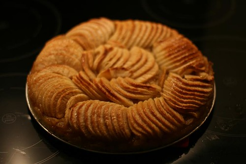
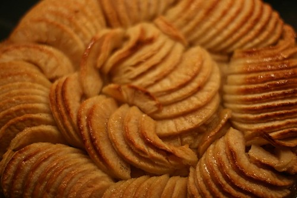
Jeg har varslet en oppskrift på blåbærpai. Den kommer. Men først vil jeg dele denne med dere.
Har du noen gang vært hos en fransk konditor og bestilt en epleterte til kaffen? Vel, denne er eplepaien/terten er så god, eller faktisk bedre enn det du får servert hos konditoren. Enkle ingredienser, gode råvarer og bittelitt tid på en søndag ettermiddag er alt som kreves for å lage denne nydelige desserten.
Den søte paideigen du lærer å lage i det følgende kan også brukes som basis for blåbærpai, pærepai, you name it.
Her er oppskriften:
Deigen er så enkel å lage at man nesten burde lagt inn noen ekstra hindringer for å føle at man fortjener resultatet. Jeg har aldri vært fan av paideig uten sukker, men for mye sukker er heller ikke bra. Denne er akkurat perfekt.
Paideig:
150 gram vanlig smør (bruk evt usaltet smør og legg til en 1/2 ts salt)
140 gram sukker
300 gram hvetemel
2 egg
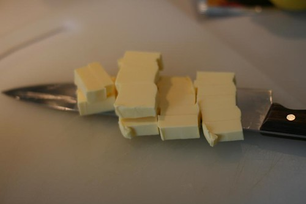
Del opp smøret i mange terninger og bland alle ingredienser i kjøkkenmaskin.
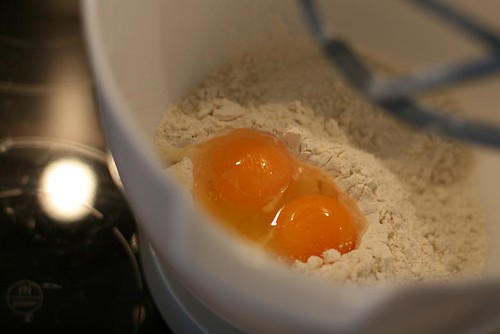
150 gram vanlig smør, 140 gram sukker, 300 gram hvetemel og 2 egg.
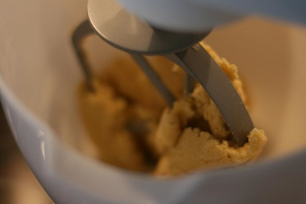
La den gå i to-tre min, eller til det formes en deig. Ferdig.
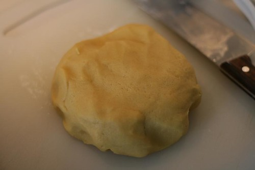
Så enkelt er det faktisk å lage denne deigen. Skuffet?
Legg deigen på en tallerken, dekk til med plast og sett den inn i kjøleskapet (smørdeiger bør oppbevares kjølig, ellers blir de veldig klissete).
Neste steg.
SETT OVNEN P�? 190 GRADER!!!!
Eplefyllet:
8-10 store epler, skrellet og utkjernet (Golden delicious er best, men alt går.)
1 sitron
100 gram sukker
1,2 dl vann
1 vanlijestang
3 ss smeltet smør
2 ss aprikossyltetøy (valgfritt)
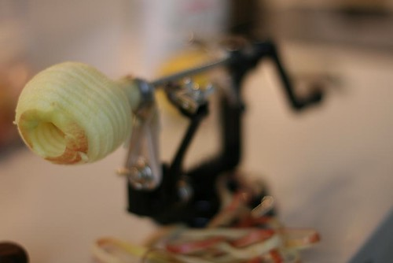
Skrell eplene. Her har jeg en epleskrellemaskin som du får kjøpt til 200 spenn på Clas Ohlson. Etter å ha skrellet 10 epler for hånd, lover jeg at du vurderer å kjøpe en, du også.
Her er en link til epleskrelleren.
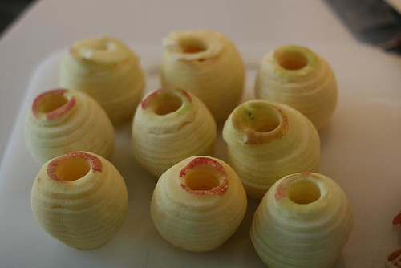
Her er ni skrelte epler.
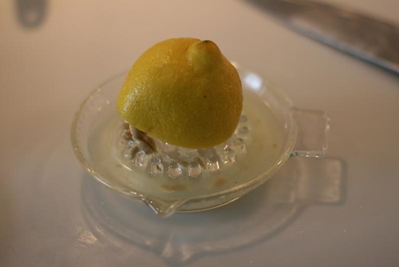
Skvis ut saften av en halv sitron
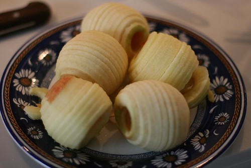
Og smør halvparten av eplene med sitronsaft, slik at de ikke blir brune.
Sett så eplene til side.
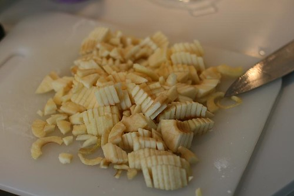
Resten av eplene, den aldre halvparten, kuttes opp i små biter og legges i en stekepanne.
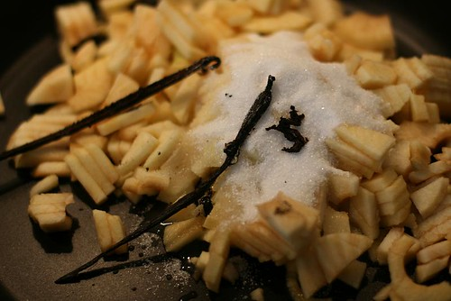
Tilsett vanlijestang, med utskrapte frø, 100 gram sukker, 1,2 dl vann og saften av en halv sitron.
Sett på middels varme på plata og la det koke i ca 10-15 minutter til mesteparten av væsken har fordampet og eplene blitt mye. Rør av og til.
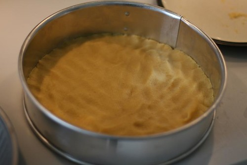
Mens fyllet koker/steker, finner du fram deigen fra kjøleskapet og sprer ut i en kakeform (ca 25 cm). Du kan også bruke en paiform, og gjerne lage en liten kant rundt hele paien.
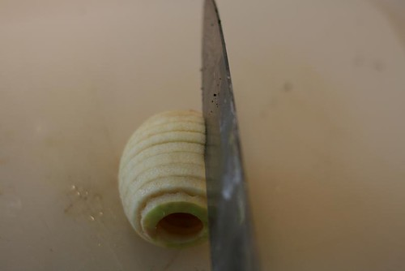
Del eplene først i to, deretter kutter du dem i skiver. Ettersom jeg har en epleskrellemaskin, har den allerede delt eplet i skiver, så da trenger jeg bare å dele dem i to.
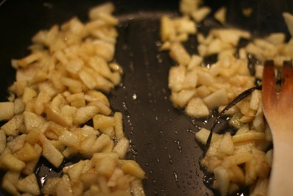
Sånn, nå er det nesten ikke vann igjen. Det meste har nå fordampet.. Fjern vanjiljestangen.
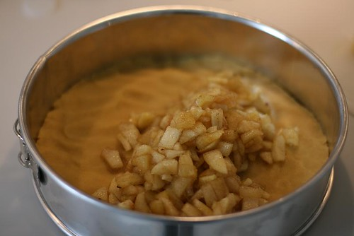
Spre fyllet utover deigen i kakeformen.
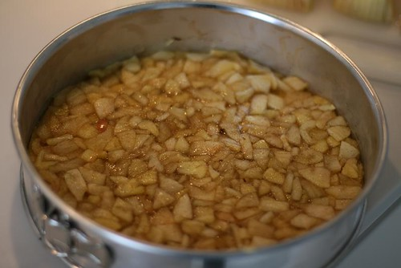
Få det til å ligge jevnt utover. (PS: Smelt 3 ss smør i en liten kasserolle. Ikke spør hvorfor, bare gjør det.)
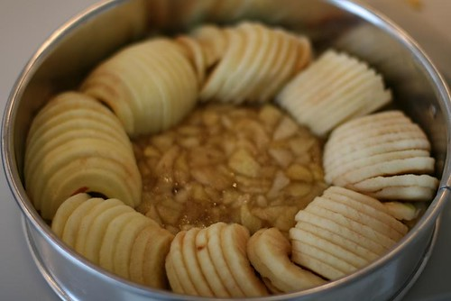
Legg epleskivene over fyllet, og len dem forsiktig litt utover som liggende dominobrikker.
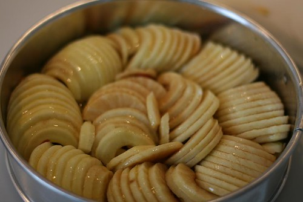
Smør eplene med 3 ss smeltet smør.
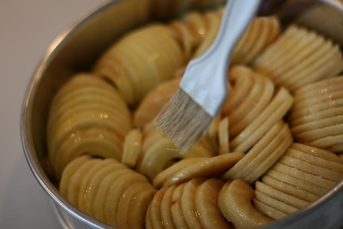
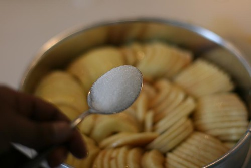
Strø 1 ss sukker over eplene.
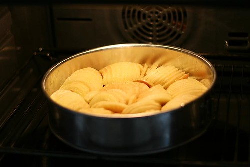
Kjør inn paien på 190 grader og la den steke i 1 time og 15 minutter….Eller helt til eplene blir gyllenbrune.
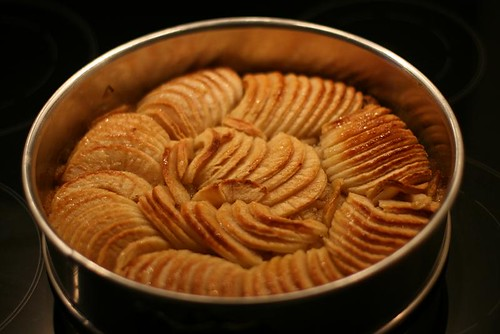
Slik som dette!: NAM! Men, ikke spis. Denne må avkjøles. Men mens den ennå er varm, kan du godt forsiktig pensle eplene med et tynt lag aprikossyltetøy, slik jeg har gjort her.
Sånn, ja, der forsvant forskalingen. La den hvilke minst en halvtime, helst til den er helt kald.
Ser ikke dette digg ut, en aprikosglinssende epleterte som er absolutt nydelig. Gled deg.
Bon apetitt!
Vil du ha få tilsendt en mail neste gang jeg legger ut en oppskrift, så meld deg på i feltet under.
Legg gjerne igjen en kommentar dersom du prøver den. Det setter jeg veldig pris på. Tusen takk. Nå skal jeg kose meg med epleterte.